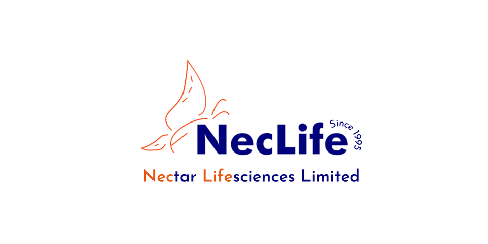
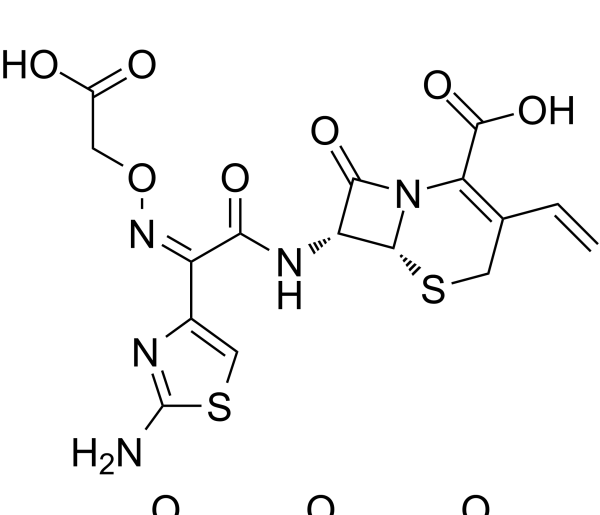
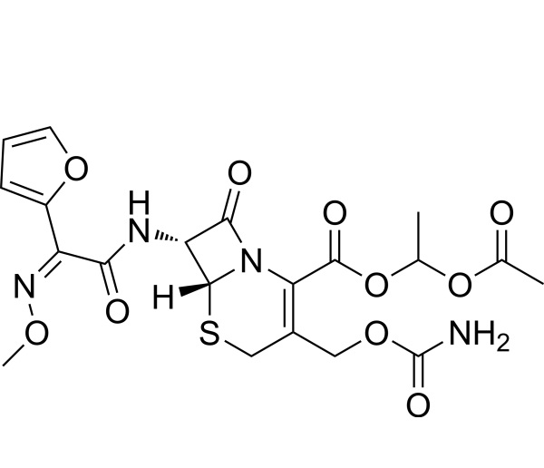

Industrial Training
Nectar Lifesciences Ltd.
**Nectar Lifesciences Ltd.** is a prominent pharmaceutical company in India, known for its expertise in the production of Active Pharmaceutical Ingredients (APIs), finished dosage forms, and intermediates. The company has established itself as a leading global supplier of **cephalosporins**, a critical class of antibiotics used to treat a wide range of bacterial infections. Nectar Lifesciences is involved in the entire value chain of cephalosporins, from API manufacturing to finished dosage forms, ensuring high quality and cost-effectiveness. With cutting-edge manufacturing facilities and a commitment to innovation and regulatory compliance, the company continues to serve global healthcare needs by providing reliable, affordable pharmaceutical products.
For more information on Nectar Lifesciences ltd. visit neclife.com
Please click here to view my Neclife In Plant Training certificate
{kind=link}
Training Experience
Over at Nectar Lifesciences, Derra Bassi, India, I studied the large scale synthesis of 2 cephalosporins namely Cefixime Trihydrate and Cefuroxime Axetil. Key takeaways from their synthesis is covered in detail below
Cefixime Trihydrate Synthesis :
The synthesis of Cefixime Trihydrate begins with the preparation of key intermediates like GVNE, GVNA, and 7-AVCA. The process utilizes a glass-lined reactor (GLR) for handling highly corrosive substances like concentrated HCl, and a series of steps are followed, including halogen substitution and chain elongation. Temperature control is critical throughout, managed by a utility header, which allows for precise adjustments via hot water, cold water, and brine systems. After each reaction step, samples are sent to quality control (QC) for analysis. The key goal is the cleavage and reconfiguration of peptide bonds in the beta-lactam ring, which is essential for the synthesis of the 7-AVCA intermediate.
Following the synthesis of 7-AVCA, the process involves multiple purification stages including enzymatic hydrolysis with penicillin G-amidase, carbon treatment for removing impurities, and crystallization to isolate the desired API. After crystallization, centrifugation and drying techniques are employed to produce semi-dry 7-AVCA, which is further processed into Cefixime Trihydrate. A key step in this transformation is the preparation of the ACMV stage, where methanol and triethylamine are used for pH control and stabilization. The final product, after drying and milling, is stored in controlled conditions to maintain its pharmaceutical grade
Cefuroxime Axetil Synthesis :
The synthesis of Cefuroxime Axetil follows a more complex pathway, beginning with the preparation of D-7-ACA (Desacetyl-7-aminocephalosporanic acid) and proceeding through several intermediate stages, such as CFUH and CFUA. The process includes multiple cooling and heating cycles, where reagents like chlorosulfonyl isocyanate (CSI) are used under controlled conditions due to their hazardous nature. Strict temperature control is essential, particularly during the chelation and scrapping phases, which ensure proper interaction between reagents and prevent the formation of by-products or unwanted impurities. After each critical step, samples are sent to QC for verification of purity and composition.
The final stages involve esterification to produce Cefuroxime Axetil in its crystalline form. This is followed by thorough washing and centrifugation to remove residual impurities and solvents. The product undergoes drying in the Rotocone Vacuum Dryer (RCVD), which ensures that moisture content is reduced to acceptable levels. The crystalline product is then further refined through spray drying, which converts it into an amorphous form to prevent polymorphism. After final drying and packaging, the product is tested once more to ensure it meets quality standards before it is released as the final Cefuroxime Axetil AP
For complete report on industrial training at Zydus Lifesciences ltd. visit In Plant Training Report (Nectar Lifesciences Ltd.)